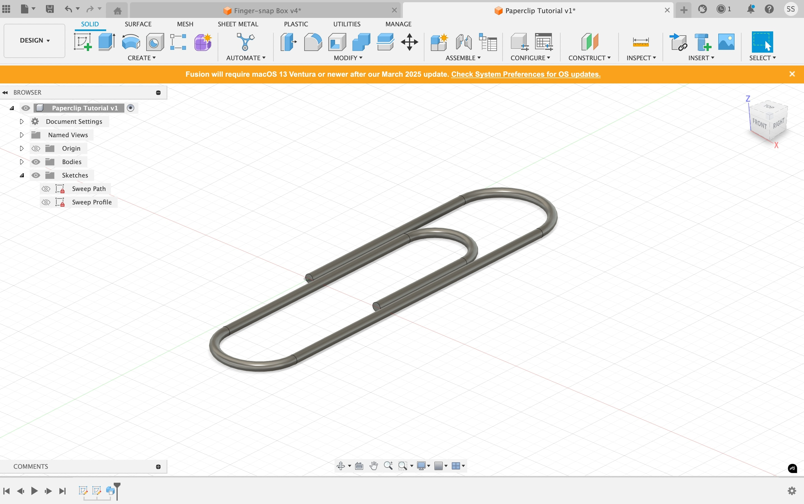
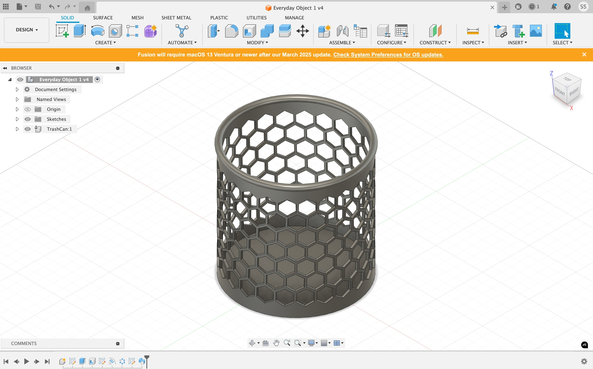
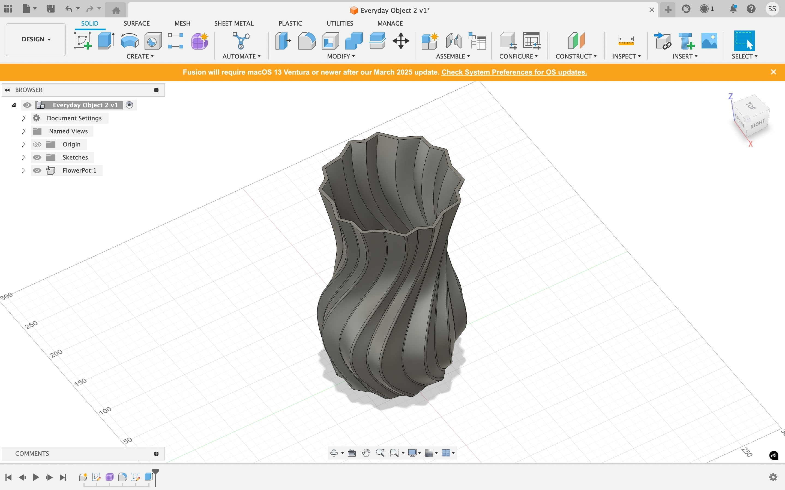

<div class="textcontainer">
<p class="margin"> </p>
<h3>Week 2: 2D Design & Cutting</h3>
<p class="margin"> </p>
<div class="flexrow">
<a id="btn" href="./temp.zip" download>Test Download Button
</a>
</div>
<p class="margin"> </p>
<h4>Assignment 1: Make a Box</h4>
<h4>Assignment 2: Fusion 360 Tutorial</h4>

<p> For further practice with Fusion 360, I chose to follow an <a href="https://www.youtube.com/watch?v=ZReXmjT42DM" target="_blank">online tutorial</a> that guided me through creating a paper clip. I am completely new to 3D modeling and I’ve noticed that one of my biggest challenges is being able to visualize a 3D object broken down in a 2D space. This tutorial required me to work with slightly more advanced shapes and visualize the paper clip in 2D before extruding it in 3D, which helped improve my spatial reasoning. Furthermore, I learned to round edges and handle more fine details that I can apply to future designs. I also gained useful experience with the sweep tool for creating pathways. </p>
<h4>Assignment 3: Fusion Modeling</h4>
<p> The final component of this week's assignment was to design 3D models of at least two everyday objects. I chose to work on models for two objects in my dorm room: my trash can and my flower pot. </p>
<p> The first object I modeled was my trash can. I borrowed calipers from the SEC and in my room, measured the length of my trash can’s rim using them. Unfortunately, the overall diameter was too large to capture on the calipers so I just used a ruler for that. I also used calipers to determine the length of the hexagons. The reason I chose to model my trash can is because it has this hexagonal pattern adorning it and I wanted to get more acquainted with using the pattern tools in Fusion to create more aesthetic designs in the future. Completing this sketch required different components, including the model of the trash can itself and the sketch of the hexagonal pattern. After completing both separately, I then integrated those two parts together. In the process, I gained practice toying with the pattern tool to create symmetric circular pattern designs.
</p>

<p> The second object I modeled was my flower pot. I struggled with this design slightly more because of its curved, twisted shape and the fact that certain edges jut out while others sink in, meaning there were separate diameters to be considered, some larger and some smaller. Once again, I used calipers to determine the diameters of the three separate diameters within the pot that I judged would be most useful to achieving the overall design. In the process of modeling the flowerpot, I acquired practice using polygonal shapes, the fillet tool to smooth edges, and the edit form tool. </p>

</div>